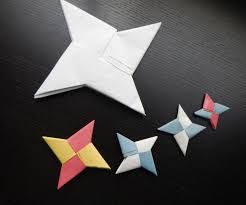

Origami Designs

Paper cranes are the most popular form of origami, and have transformed the meaning behind these little works of art. The crane has always been a strong symbol of success and good fortune in Japanese culture, and when folded into origami, it is believed that your heart's desire will come true.

Origami Dragons are very individual creatures. Due to the many complexities of their wings and horns, Origami Dragons are able to contort their bodies in a specific form that is unique to them. While adult Origami Dragons may look the same at a base level, no two are exactly alike.(Dragon Story game)

A shuriken (Japanese: 手裏剣; literally: "hidden hand blade") is a Japanese concealed weapon that was used as a hidden dagger or metsubushi to distract or misdirect.

This 8 point ninja star (or 8 sided ninja star) is one of the coolest origami you'll ever learn to fold. What makes this shuriken so special is that it can also transform into some sort of round blade or frisbee. This makes the shuriken a very dangerous under cover weapon. Oh yeah, it's dangerous because the points are very sharp, so watch where you throw it.